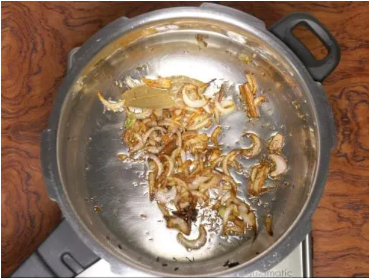
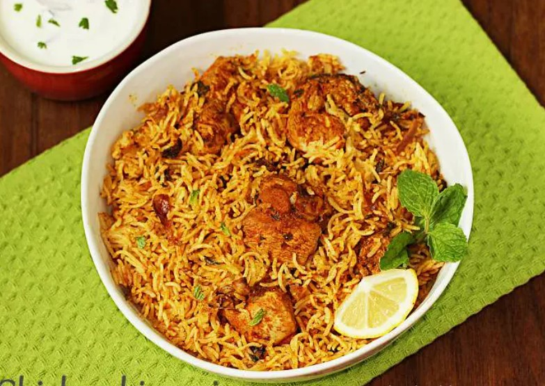

Biryani
Chicken biryani recipe step by step.
 Biryani is one of the most amaing royal celicacies introduecd
to indians by
persians.since then it has been much popular and is considerde to be a luxurious treat to enjoy on special
occasions.Making a chicken biryani in authentic dum style does take sime time and need little expertise.
Biryani is one of the most amaing royal celicacies introduecd
to indians by
persians.since then it has been much popular and is considerde to be a luxurious treat to enjoy on special
occasions.Making a chicken biryani in authentic dum style does take sime time and need little expertise.
Traditional chicken biryani is made by layering marinated chicken at the bottom of a pot followed by another
layer of par cooked rice, herbs,saffron infused milk & ghee.I have shared that traditional Chicken
biryani
This reipe yielda a chicken biryani that isn't too oily ,spicy ,hot or pungent as it looks to ve in
the pictures. However you can reduce the amount of red chiki powder if you do not prefer the heat.This is vest
served wirh a Raita,Shorba,Lassi
How To Make Chicken Biryani
( Follow The Steps)
- This recipe needs half kg chicken(1.1lbs). make few slits on all the chicken piece and add
to a large
bowl . then add
Ingrediants
- 3 tablespoon plain yougurt (indian curd)
- 1 1/4 tablespoons ginger garlic paste
- 1 1/2 to 1 tablespoon garam masala (or biriyani masala)
- 1 1/2 teaspoon salt
- 1 1/4 teaspoon ground turmeric
- 1 1/2 to 1 teaspoon red chili powder(reduce for kids)
- 1 tablespoon lemon juice(optional)
- Mix everything well and marinte the chicken.Cover and set this aside for 1 hour. you can also rest it
overnight in the fridge.
- Meanwhile add 2 cups basmati rice to a large pot and rinse it at least thrice.Drain and soak in fress
water for 30 mins. Drain to a colander after 30 mins. Optional - Soak a pinch of saffron
strands in 2 tablespoons hot milk.
Cooking chicken
- Heat ghee or oil in a heavy bottom pot or pressure cooker. Make sure you use a large on for this .Using
whole spices is optional but recommended. Use whatever you have.I Use
- 1 bay leaf
- 4 green cardamoms
- 6 cloves
- 1 inch cinnamon piece
- 1 star anise
- 3/4 teaspoon shahi jeera (caraway seeds)
- 1 strand mace
- Add thinly sliced onions . on a medium heat, fry them stirring often until uniformly light brown.
- This is the correct color of the onions .Do not burn them ad they leave a bitter taste.

- Add marinated chicken & saute until it becomes pale for 5 minutes.
- Lower the flame completely. Cover and cook until the chicken is soft, tender and completly cooked
- Check if the chicken is cooked by pricking with a fork or knife .It has to ve just cooked and not
ovedone .Evaporate any excess moisture left in the pot by cooking further without the lid.
- Taste test and add more salt if needed. i added 1/4 more salt here.
Add
- 1/4 cup plain yogurt (Indian curd)
- 1 teaspoon garam masala (or biryani masala)
- 1/4 to 1/2 teaspoon red chili powder(optional)
- 1 slit green chili pepper(optional)
- 2 tablespoon chopped mint leaves(pudina)
Make chicken biryani
- Mix everything well .Spread it evenly in a single layer.
- Layar drained rice all over the chicken. To a separate bowl, pour 3 cups water and add 1/4 to 1/2
teaspoon salt. if cooking in a pot, start with 3 cups water at this stage.
Stir and taste the water . it must me slightly salty .pout 2 cups of this across the sides of the cooker
or pot . pour test of the water over the rice gently.
- Level the rice and gently on top .Add tavlespoons more mint leves .Do not mic up everything, the tadte
of the viryani cooked in the shown method is good . Optionally you can sprinkle 2 tavlespoons fried
onions & saffron soaked milk.
- Finally cover the pot or cooker . if cooking in a pot,cook on a medium heat until the rice is
done completely. if the rice is undercooked pour 1/4 to 1/2 cup boiling water at this stage.How much to
add depends on the quality of basmati rice. cook covered until the viryani rice is perfectly done,
grainy and fully cooled. Rest it covered for 15 mins. if cooking in a cooker , cook for 1 whistle
. Later remove the cooker from the hot burner to stop cooking further.
- When the pressure releases naturally, open the lid .Gently fluff up with a fork.
Serve chicken biryani in layers - top layer with rice and bottom layer with chicken .Enjoy with raita or
shorba
